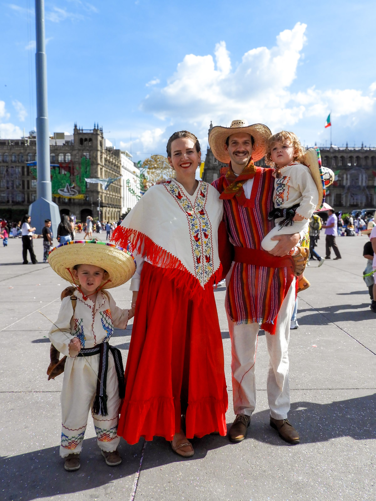

UNA IGLESIA, MUCHAS CASAS
ENCUENTRA RÍO CERCA DE TI.
Somos 12 sedes sirviendo en Ciudad de México, Estado de México, Hidalgo, Tlaxcala y San Luis Potosí.

UNA IGLESIA, MUCHAS CASAS
Somos 12 sedes sirviendo en Ciudad de México, Estado de México, Hidalgo, Tlaxcala y San Luis Potosí.
